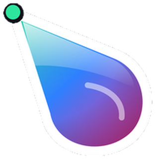
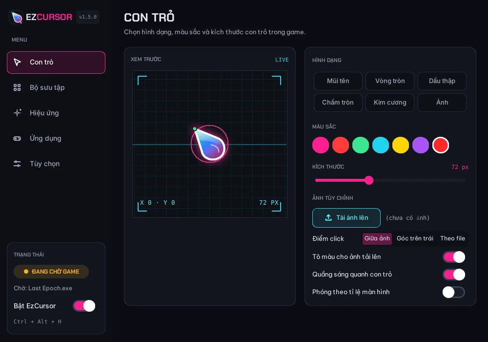

Thấy rõ con trỏ giữa mọi trận đánh.
EzCursor vẽ một con trỏ to, sáng màu lên trên các game Windows có con trỏ khó nhìn như Last Epoch. Miễn phí và mã nguồn mở.
Rê chuột và click trong khung này để thử. Tắt đi để thấy con trỏ gốc khó nhìn thế nào.
Sinh ra từ một buổi lạc chuột trong Last Epoch
Trong nhiều game ARPG, con trỏ chuột nhỏ, tối màu và dễ chìm giữa hiệu ứng phép, quái và nền bản đồ. Mất dấu con trỏ một giây cũng đủ để click nhầm chỗ.
EzCursor giải quyết việc đó bằng cách vẽ con trỏ của riêng nó, to và nổi bật, ngay trên game. Ra khỏi game hay mở menu Start, Alt+Tab, con trỏ Windows quay lại như bình thường.
- Không đụng vào game
- EzCursor là một lớp phủ trong suốt chạy bên ngoài. Nó chỉ đọc vị trí chuột, không sửa file hay bộ nhớ của game.
- Chỉ hiện ở game bạn chọn
- Bạn chọn game theo tên file chạy. Ở các ứng dụng khác, mọi thứ giữ nguyên.
- Miễn phí, mã nguồn mở
- Phát hành theo giấy phép GPL-3.0, toàn bộ mã nguồn trên GitHub.
Giao diện

Trong game
Có gì bên trong
- 15 con trỏ có sẵn Liquid Drop, Mảnh hồng và 13 con trỏ Bibata với các chủ đề Amber, Classic, Ice hoặc màu tùy chỉnh, có bản cho người thuận tay trái.
- Hoặc tự tạo Chọn hình, màu, kích thước từ 24 đến 160 px, thêm quầng sáng, hoặc dùng ảnh PNG, GIF động và file con trỏ Windows .cur, .ani của riêng bạn.
- Hiệu ứng Vệt lấp lánh, vệt neon, cầu vồng, bóng mờ, bong bóng; gợn sóng hoặc pháo hoa khi click.
- Tự nhường chỗ Con trỏ thật hiện lại khi bạn mở menu Start, Search, Alt+Tab hoặc rê lên taskbar.
- Mỗi game một phong cách Tạo hồ sơ riêng cho từng game với con trỏ và hiệu ứng khác nhau. EzCursor tự đổi khi bạn chuyển game.
- Chọn game trong một chạm Gợi ý sẵn Last Epoch, Path of Exile, Diablo, Grim Dawn và nhiều game ARPG khác, kèm cảnh báo khi game đang chạy Fullscreen.
- Phím tắt theo ý bạn Đổi tổ hợp phím bật/tắt, đổi hình, đổi màu và thoát để không trùng với phím của game.
- Chạy ngầm gọn nhẹ Nằm dưới khay hệ thống, có thể khởi động cùng Windows và tự kiểm tra bản cập nhật.
- Tiếng Việt và tiếng Anh Đổi ngôn ngữ ngay trong tab Tùy chọn, không cần khởi động lại.
Bắt đầu trong 4 bước
-
Tải và cài đặt
Chạy file
EzCursor_Setupvừa tải. Nếu Windows hiện “Windows protected your PC”, bấm More info rồi Run anyway. Bộ cài không cần quyền Admin. -
Để game ở chế độ cửa sổ
Trong cài đặt đồ họa của game, chọn Borderless hoặc Windowed. EzCursor không hiện được ở chế độ Fullscreen độc quyền.
-
Chọn game
Vào tab Ứng dụng của EzCursor, tích vào tên game trong danh sách gợi ý (hoặc mở game rồi bấm Làm mới để thấy game đang chạy), rồi bấm Áp dụng.
-
Chọn con trỏ bạn thích
Chỉnh ở tab Con trỏ hoặc Bộ sưu tập, thêm vệt sáng ở tab Hiệu ứng. Muốn mỗi game một kiểu riêng, bấm + Hồ sơ riêng ở dòng của game trong tab Ứng dụng. Bấm X để thu EzCursor xuống khay hệ thống.
Phím tắt
| Ctrl Alt H | Bật / tắt con trỏ |
| Ctrl Alt R | Đổi hình dạng |
| Ctrl Alt 1–5 | Đổi màu |
| Ctrl Alt Q | Thoát hẳn EzCursor |
Đây là phím mặc định. Bạn đổi được trong tab Tùy chọn.
Câu hỏi thường gặp
Dùng EzCursor có bị khóa tài khoản game không?
EzCursor không sửa file, không đọc hay ghi bộ nhớ của game; nó chỉ vẽ một cửa sổ trong suốt lên trên màn hình. Dù vậy, mỗi game có điều khoản riêng. Hãy tự kiểm tra, và tránh dùng trong game thi đấu có anti-cheat nghiêm ngặt.
Tôi đã cài nhưng không thấy con trỏ mới trong game
Kiểm tra ba điều: game đang ở Borderless hoặc Windowed (nếu khung Trạng thái hiện FULLSCREEN thì đây là nguyên nhân); game đã được tích và bấm Áp dụng trong tab Ứng dụng; EzCursor đang bật (mặc định Ctrl + Alt + H). Khung Trạng thái bên trái app cho biết EzCursor đang chờ game nào.
Con trỏ chuột của tôi biến mất
Mở lại EzCursor rồi thoát bằng Ctrl + Alt + Q để trả con trỏ Windows về. Nếu vẫn chưa được, đăng xuất hoặc khởi động lại Windows.
Hiệu ứng có làm game chậm không?
Hiệu ứng chỉ được vẽ khi có hạt đang hiện trên màn hình. Nếu máy yếu hoặc thấy giật, giảm Mật độ xuống Ít hoặc tắt hiệu ứng trong tab Hiệu ứng.
Làm sao gỡ cài đặt?
Vào Settings → Apps → Installed apps, chọn EzCursor và bấm Uninstall. Cài đặt đã lưu cũng được xóa theo.
Ủng hộ EzCursor
EzCursor miễn phí và sẽ luôn miễn phí. Nếu nó giúp bạn chơi game dễ chịu hơn, một ly cà phê sẽ giúp mình có thêm thời gian làm tính năng mới.
Chuyển khoản ngân hàng
PayPal
Dành cho bạn ở ngoài Việt Nam.
Không tiện ủng hộ? Tặng một ⭐ cho repo trên GitHub hoặc giới thiệu EzCursor cho bạn bè cũng là ủng hộ rồi.